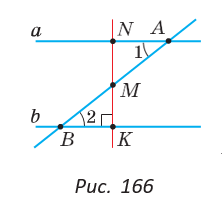
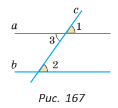
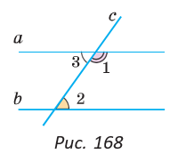
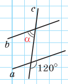

§ 15. Признаки параллельности прямых.
15.3. Признаки параллельности прямых
С указанными парами углов связаны следующие признаки параллельности прямых.
Если при пересечении двух прямых секущей внутренние накрест лежащие углы равны, то прямые параллельны.
|  | Дано: а и b — данные прямые, AB — секущая, ∠ 1 = ∠ 2 (рис. 166). Доказать: a || b. Доказательство. Из середины M отрезка AB опустим перпендикуляр MK на прямую b и продлим его до пересечения с прямой а в точке N. Треугольники BKM и ANM равны по стороне и двум прилежащим к ней углам (AM = MB, ∠ 1 = ∠ 2 по условию, ∠ BMK = ∠ AMN как вертикальные). Из равенства треугольников следует, что ∠ ANM = ∠ BKM = 90°. Тогда прямые а и b перпендикулярны прямой NK. А так как две прямые, перпендикулярные третьей, параллельны между собой, то a || b. Теорема доказана. |
Если при пересечении двух прямых секущей соответственные углы равны, то прямые параллельны.
|  | Дано: ∠ 1 = ∠ 2 (рис. 167). Доказать: а || b. Доказательство. Углы 1 и 3 равны как вертикальные. А так как углы 1 и 2 равны по условию, то углы 2 и 3 равны между собой. Но углы 2 и 3 — внутренние накрест лежащие при прямых а и b и секущей с. А мы знаем, что если внутренние накрест лежащие углы равны, то прямые параллельны. Значит, a || b. Теорема доказана. |
Если при пересечении двух прямых секущей сумма внутренних односторонних углов равна 180°, то прямые параллельны.
|  | Дано: ∠ 1 + ∠ 2 = 180° (рис. 168). Доказать: а || b. Доказательство. Углы 1 и 3 — смежные, поэтому их сумма равна 180°. А так как сумма углов 1 и 2 равна 180° по условию, то углы 2 и 3 равны между собой. Но углы 2 и 3 — внутренние накрест лежащие при прямых а и b и секущей с. А мы знаем, что если внутренние накрест лежащие углы равны, то прямые параллельны. Значит, a || b. Теорема доказана. |
Сформулируйте и докажите аналогичные признаки для внешних накрест лежащих и внешних односторонних углов.
А теперь выполните Тест 2.
| Тест 2 | |
|---|---|
|  | Сколько градусов должен составлять угол , чтобы прямые a и b были параллельны? |
|
|